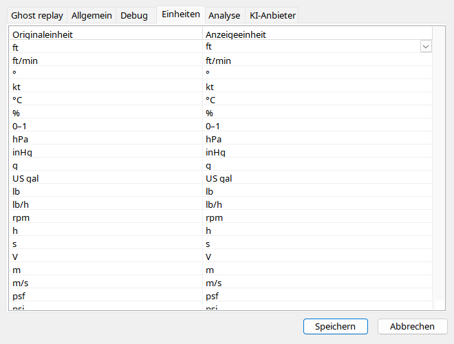

Wählen Sie Einheiten je Größe und prüfen Sie danach den Text. Klassische Instrumentgeometrie kann in Fuß bleiben, während Zahlen Meter zeigen. Barometer-, Öl- und Hydraulikdruck sind verschieden. Öl wird sinnvoll in psi angezeigt. Schalterbezeichnungen sind Enums: FLAPS 5 ist eine Rastung, nicht zwingend Grad.
| Option / Aktion | Verhalten und Einschränkungen |
|---|---|
| Auswahl | Unterstützte Einheit je Größe; Inspektor/Diagramme zeigen konvertierten Wert und Beschriftung, Quelle unverändert. |
| Höhe / Fahrt | Textkonvertierung getrennt von klassischer Instrumentgeometrie. |
| Druck / Kraftstoff | Öl und Baro sowie Menge und Fluss unterscheiden; Öl in psi. |
| Enums | Cockpit-Schaltertexte sind Zuordnungen, keine Einheitenkonvertierung; Unbekanntes numerisch. |
